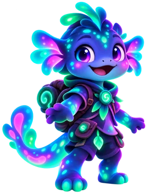

ДУМАЙ. ПРОБУЙ. ОТКРЫВАЙ.Маленькие открытия.
Маленькие открытия.
Большие победы.
Русский язык и математика для 1–4 классов.
Выберите предмет, класс и начните играть.

1 класс · Математика
Считаем вместе
Найдите пару: пример и его ответ.
Выберите игру 30
Нет игр с таким сочетанием. Выберите другой класс или предмет.